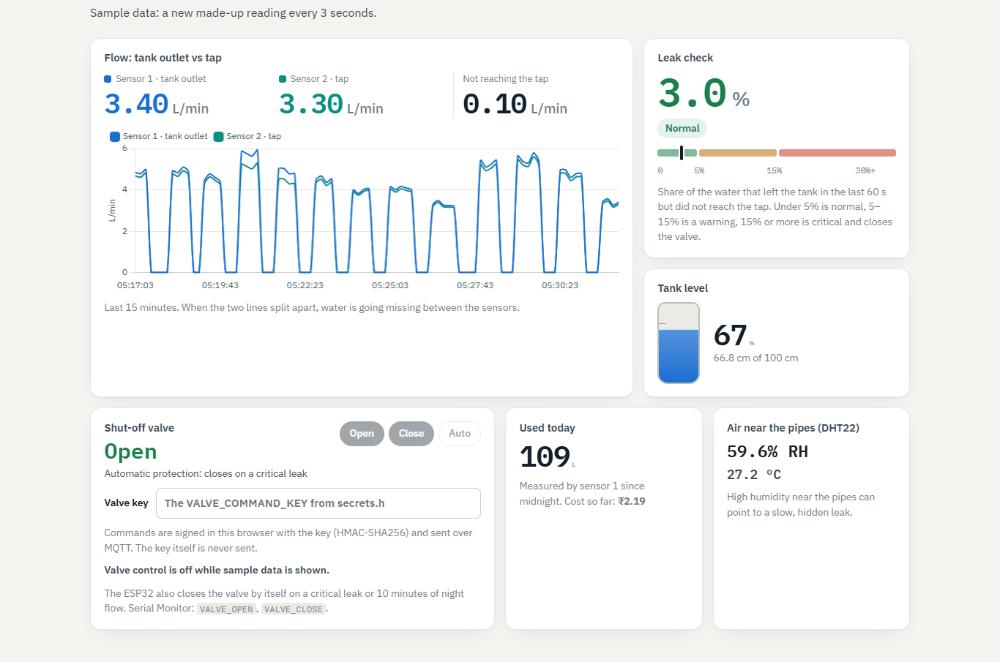
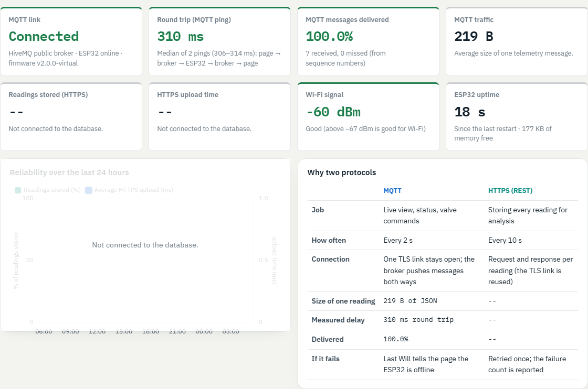

TEAM 10 · IOT MINI PROJECT · UE23CS342AA3
IoT Water Leak Detection and Consumption Analytics Using Dual Flow Sensors
Project report
| Role | Name | SRN |
|---|---|---|
| Team Lead | ||
| Second Lead | ||
| Member | ||
| Member |
FlowState finds hidden water leaks by measuring flow at two points on the same pipe and comparing them every 60 seconds. Water that leaves the tank but never reaches the tap is counted as lost.
An ESP32 reads two flow sensors, a tank-level sensor and a humidity sensor every second. It classifies loss as Normal, Warning or Critical on the device, and closes a servo valve on a critical leak. Live readings go to an MQTT broker every 2 s; every reading is stored in Supabase (PostgreSQL) over HTTPS every 10 s.
A web dashboard turns the stored data into answers to five questions: how much water is lost, when it is used, whether today is unusual, whether water flows at night, and what it costs. On the live services, the MQTT round trip measured about 310 ms with 100% delivery, a signed valve command was confirmed in 1.24 s, and all 141 automated checks pass.
Hidden leaks waste water every day without anyone noticing. A cracked joint, a dripping tap or a running cistern rarely shows on a monthly bill until a lot of water is gone.
| Fact | Source |
|---|---|
| The leaks in an average home waste more than 9,300 US gallons (about 35,000 L) a year | US EPA WaterSense, Fix a Leak Week |
| One tap dripping once a second wastes more than 3,000 gallons (over 11,000 L) a year | US EPA WaterSense, Fix a Leak Week |
| NITI Aayog warned that India faces the worst water crisis in its history, and that it is likely to get worse | NITI Aayog, Composite Water Management Index, 2018, reported by The Wire |
A single water meter only shows how much was used, not whether any of it was wasted. FlowState puts two flow sensors on the same pipe: one where water leaves the tank and one at the tap. Any difference between them is water that never reached its use, so a leak shows up within one 60-second comparison.
This is an IoT problem by nature. The sensing has to happen at the pipe, the alarm and shut-off must work even without the internet, and the analysis needs days of history that only a cloud database keeps.
The project is designed around the analysis first: five questions a household or a hostel warden actually asks about water.
| Stage | Objective |
|---|---|
| Sense | Read two flow sensors, the tank level and humidity every second |
| Ingest | Send live readings over MQTT every 2 s and store one over HTTPS every 10 s |
| Process | Turn pulses into litres, compare the sensors every 60 s, classify loss, close the valve on a critical leak |
| Store | Keep every reading and alert in a cloud database that rejects impossible values |
| Analyze | Answer the five questions on a web dashboard, with cost at an editable tariff |
In scope: one tank-to-tap line, one ESP32, a servo-driven shut-off valve, and a public dashboard. Out of scope: several buildings, billing integration with a water board, and a mobile app; the dashboard works in a phone browser instead.
The ESP32 acts on leaks by itself; live data and commands travel over MQTT, and every reading is stored over HTTPS for the analysis. Three design choices shape the system:
get_hourly_summary() reduces about 8,600 readings a day to 24 rows, so the dashboard loads a week of analysis in one small request.| Table | One row is | Main columns |
|---|---|---|
| water_readings | One reading, every 10 s | flow_rate_1, flow_rate_2, percentage_loss, water_level, valve_state, leak_status, daily_total_liters, humidity, temperature, wifi_rssi, upload_ms |
| alerts | One event | alert_type, message, severity, timestamp |
The build uses seven parts around an ESP32 DevKit V1 and costs about ₹2,500 to ₹3,500. Prices are rough Indian retail ranges and vary by shop.
| Part | Job | ESP32 pin and interface | Approx. cost (₹) |
|---|---|---|---|
| ESP32 DevKit V1 | Controller with Wi-Fi | – | 400–500 |
| 2 × YF-S201 flow sensor | Flow at the tank outlet and at the tap | GPIO 19 and 22, digital pulses | 450–550 |
| Capacitive water-level sensor | Water in the tank | GPIO 33, analog (12-bit ADC) | 150–350 |
| DHT22 (DHT11 is cheaper) | Humidity and temperature near the pipes | GPIO 4, single-wire | 80–250 |
| DS3231 real-time clock | Keeps time without Wi-Fi | SDA 18, SCL 21, I²C | 120–180 |
| SG90 servo and ball valve | Shut-off valve | GPIO 26, PWM 50 Hz | 300–500 |
| Active buzzer | Alarm | GPIO 13, digital out | 20–40 |
| 5 V supply, resistors, breadboard, wires, fittings | Power and plumbing | – | 500–800 |
The YF-S201 gives about 450 pulses per litre. A bucket test (water run into a measuring jug) checks this, and the constant is adjusted if a sensor reads consistently high or low. The level sensor is calibrated by recording the ADC value with the tank empty and full. The measured results go in section 9.
The software has three parts: ESP32 firmware, a Supabase database, and a static web dashboard. All of it is in the project repository with automated tests.
Arduino code for the ESP32 (core 3.x), split into one file per pipeline stage, so each part can be owned and explained by one person.
| File | Stage | What it does |
|---|---|---|
| sense.ino | Sense | Interrupts count flow pulses; reads the level sensor and the DHT22 |
| process.ino | Process | 60 s leak check, night watch (2–5 AM), hourly learning, valve and buzzer |
| cloud.ino | Ingest, Store | Wi-Fi, clock (DS3231 corrected by NTP), HTTPS uploads to Supabase, the alert upload queue |
| mqtt.ino | Ingest | MQTT telemetry, online status with Last Will, alerts, ping/pong, signed valve commands |
| console.ino | Debug | Serial Monitor commands: STATUS, VALVE_OPEN, VALVE_CLOSE, KEY_CHECK and more |
| flowstate_rules.h | Process | The decision rules as plain functions, also tested on a PC |
Passwords and keys live in a separate secrets.h that is never committed. Setting ENABLE_MQTT to 0 builds an HTTPS-only version as a fallback.
Reliability measures. A network problem must never stop the sensing or the valve:
One setup script creates the two tables with these protections:
The function get_hourly_summary() turns about 8,600 readings a day into 24 hourly rows of water used, water lost, night flow and connectivity health.
Plain HTML, CSS and JavaScript with no build step, using Chart.js, supabase-js and MQTT.js, hosted on Netlify. It loads libraries with integrity hashes and runs under a strict Content-Security-Policy that allows connections only to the project’s database and the MQTT broker.
Pulses are counted by interrupts and turned into litres every second. Every 2 s a compact JSON message goes to the broker and reaches the dashboard over a WebSocket. Every 10 s the same reading is posted to Supabase, which streams the new row to the dashboard and later folds it into the hourly summary.
FlowState uses MQTT for everything live and HTTPS for everything stored, each where it fits best.
| Link | Protocol |
|---|---|
| Flow sensors to ESP32 | Digital pulses counted by interrupts |
| Level sensor to ESP32 | Analog voltage, 12-bit ADC |
| DHT22 to ESP32 | Single-wire digital protocol |
| DS3231 and ESP32 | I²C bus |
| ESP32 to servo | PWM, 50 Hz |
| ESP32 and router | Wi-Fi, IEEE 802.11 b/g/n, 2.4 GHz |
| ESP32 and MQTT broker | MQTT 3.1.1 over TLS, port 8883 |
| ESP32 to Supabase | HTTPS REST, JSON POST, connection kept alive |
| ESP32 to time servers | NTP |
| Browser and broker | MQTT over secure WebSocket, port 8884 |
| Browser and Supabase | HTTPS queries and Realtime over WebSocket |
Every topic starts with a private root, flowstate/team10-d76014, so other users of the public broker do not mix with this device.
| Topic | Direction | QoS, retain | Content |
|---|---|---|---|
| /telemetry | ESP32 to broker | QoS 0 | Live readings every 2 s, with a sequence number |
| /status | ESP32 to broker | QoS 1, retained | “online” on connect; the Last Will says “offline” if the ESP32 drops off |
| /alert | ESP32 to broker | QoS 0 | Leak, night-flow, anomaly and valve alerts as they happen |
| /cmd | Dashboard to ESP32 | QoS 1 | Valve commands signed with HMAC-SHA256 |
| /ack | ESP32 to dashboard | QoS 0 | The result of each command |
| /ping, /pong | Both ways | QoS 0 | Round-trip time measurement |
QoS 0 suits telemetry because a fresh reading follows 2 s later. Commands use QoS 1 so the broker confirms delivery. The retained status lets a viewer who opens the page later see at once whether the device is online.
An example telemetry message (about 220 bytes):
{"seq":41,"ts":1762930000,"f1":4.27,"f2":3.98,"loss":6.8,"lvl":63.5,"valve":1,"auto":1,"leak":"Warning","anom":"Learning","night":"Normal","total":12.346,"hum":58.2,"temp":27.1,"rssi":-61,"up":3600,"heap":182000,"upms":240,"hfail":0}
Why HTTPS for storage. A REST call writes one row with a plain JSON body, and it works through networks that block MQTT ports. If MQTT is blocked, the dashboard still updates from the database’s own live stream.
Connectivity efficiency, as built:
The dashboard (sustainflow.netlify.app) answers each of the five questions with one plain sentence and one chart, from the last 7 days of stored readings in India time. The loss in each 60-second window is computed on the ESP32:
loss (%) = (V1 − V2) ÷ V1 × 100
V1 and V2 are the litres through sensor 1 (tank outlet) and sensor 2 (tap) in that window. Below 5% is Normal, 5–15% Warning, and 15% or more Critical.
The database works out litres used in each hour from the rise in the ESP32’s daily total between readings. A drop to a new day’s total counts as that total; a drop on the same day (a reboot) counts as zero. Litres lost = litres used × loss % for each reading.
| Question | How it is worked out | How it is shown |
|---|---|---|
| Am I losing water, and how much? | Lost litres per day and over 7 days, as a share of all water used; under 5% is treated as sensor error | Stacked bars per day: water that reached the tap and water lost |
| When do I use the most water? | Average litres in each hour of the day over the previous days | Bars for an average day, with today’s hours as a line |
| Is today’s use unusual? | Today’s litres so far against the average of previous days by the same time; 1.5× or more is unusual, after 3 days of data | Cumulative lines: today against a normal day |
| Is water flowing at night? | Minutes of flow between 2 and 5 AM each night, from readings with flow of 0.1 L/min or more | A strip of seven nights: dry, some flow, or alert |
| What does it cost? | Litres × the tariff in rupees per 1,000 L (editable); a month = the daily average × 30 | Today, a month at this rate, and the monthly cost of leaks |

Each value briefly highlights when a new reading changes it, and the five pipeline stages light up as each reading arrives. A CSV download of the raw readings supports the lab report.
The core idea is differential measurement: two sensors on one pipe reveal loss directly, where a single meter only shows use.
All 141 automated checks pass, and the live MQTT path was measured at a 310 ms median round trip with 100% delivery. The hardware tests below are run by the team in the lab.
| Suite | Checks | What it proves |
|---|---|---|
| Firmware rules (PC, C++) | 61 pass | Leak levels, night window across midnight, learning average, anomaly rule, command checks (stale, replay, clock), signed text identical to the dashboard’s |
| Dashboard unit tests | 26 pass | The five answers, India time, MQTT parsing, lost-message counting, HMAC-SHA256 against the RFC 4231 test vector |
| Browser tests | 12 pass | The real page under the production security policy with a simulated database and broker: live MQTT, the five answers, signed valve commands, offline warning, no script injection |
| Database | 42 pass | Permissions, value checks, clock correction, flood limit, hourly analysis |
| ESP32 build | pass | Compiles with and without MQTT: 85% of flash and 16% of RAM with MQTT |
The database checks also ran on the live Supabase project inside a transaction that was rolled back, so the real permissions were tested and no test data was left behind. An independent code review of the firmware found that network calls could stall the main loop; those were fixed (section 5, reliability measures) before release.
Measured on 12 November 2026 on the HiveMQ public broker, with a stand-in device on a PC speaking the firmware’s exact topics and messages, and the real dashboard in Chrome.
| Measurement | Result |
|---|---|
| MQTT round trip (page to device and back) | 310 ms median, 306–314 ms |
| MQTT messages delivered | 100% |
| Size of one telemetry message | 220 bytes |
| Signed valve command, click to confirmation | 1.24 s |
| Browser errors | None |

| Test | Pass when | Status | Measured result |
|---|---|---|---|
| H1 Flow sensor calibration (bucket test) | Each sensor within a few % of the jug | ||
| H2 Sensors agree with no leak | Loss under 5% in every 60 s window | ||
| H3 Leak simulation (T-piece between the sensors) | Warning at 5–15%; Critical at 15%+ closes the valve and sounds the buzzer | ||
| H4 Night watch | Alert after 5 min of flow; valve closes after 10 min | ||
| H5 Tank level calibration | Empty, half and full read correctly | ||
| H6 Valve control from the dashboard | Key fingerprints match; wrong key refused; Close under 3 s | ||
| H7 Losing the network | Offline shown within about 45 s; reconnects by itself | ||
| H8 Power cut | Daily total kept, at most a minute of flow missed | ||
| H9 Clock | NTP corrects the DS3231, or replaces it | ||
| H10 Performance with the real ESP32, 1 hour | Round trip, delivery, upload time and Wi-Fi signal recorded |
The step-by-step procedures are in the repository’s docs/TESTING.md. The dashboard’s performance panel gives H10’s numbers live.
The work is split by pipeline stage, so each member owns one part end to end and presents it in the lab.
| Member | Role | Owns | Presents in the lab |
|---|---|---|---|
| Team Lead | Process: leak rules, night watch, learning, valve and buzzer (process.ino, flowstate_rules.h); integration and the final demo | A leak simulation closing the valve | |
| Second Lead | Ingest and Store: Wi-Fi, MQTT, HTTPS, Supabase setup (mqtt.ino, cloud.ino, flowstate_setup.sql) | The MQTT topics, Last Will and the performance panel | |
| Member | Sense and hardware: wiring, sensors, calibration (sense.ino, wiring guide) | The bucket test and the pin map | |
| Member | Analyze: the dashboard and the five questions; the report and slides | The five answers from a week of data |
FlowState covers all five IoT stages with a cheap, explainable build. Two sensors find loss within a minute, the ESP32 acts on its own, and the dashboard turns stored readings into five plain answers.
supabase/flowstate_setup.sql once. Copy the project URL and the anon key from Project Settings → API Keys.secrets.example.h to secrets.h, fill in the Wi-Fi name and password (2.4 GHz), the Supabase URL and anon key, and a random valve key. Upload, open the Serial Monitor at 115200 baud and type STATUS.Web_Dashboard) and set SUPABASE_URL and SUPABASE_ANON_KEY. Each merge to main then updates the site.KEY_CHECK on the Serial Monitor.